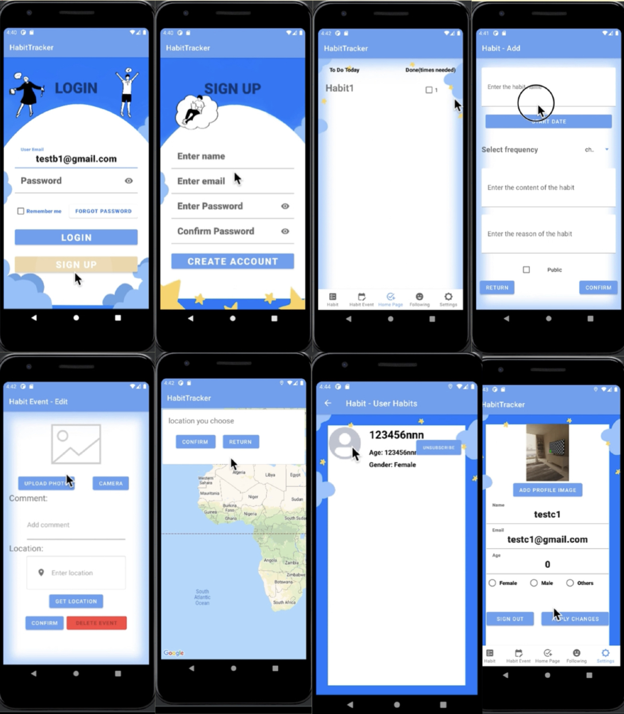

Academic project archive
Habit Tracker
An Android app for habits and shared progress.
Java · Android Studio · Firebase

- Java
- Android Studio
- Firebase
This is the project for CMPUT 301 F21 Team 08. The habit tracker app can let users to record their habits and help them keep track of these habits. It can prompt the user when to finish a habit and record the completion level of each habit. Users in this app can also add each other as friends. Friends can see the tracked habits of each other and the completion level of these habits as well. More functions are coming up!
First Sprint: Oct.18 - Oct.24
In this sprint, we focus on the structural implementation of the program. We divided the program into three function sections: login (user profile related), habit, and habit event. We only build the UI part for these three sections and realize the interaction between pages in this sprint. Pages related to "following" is not considered in this sprint.
Summary: By the end of this sprint, the team did finish most of the required UI pages as planned. Two pages left undone is the main page (to-do list page) and the profile page. We set to finish these pages in the second iteration.
Second sprint: Oct.25 - Oct.31
In this sprint, we focus on realizing the actual functions of the three sections of the program within the sections themselves. We do not consider the interaction between functions in this section.
Summary: By the end of this sprint, we managed to realize most functions for log-in, habits and habit event as separated parts. We will connect these parts together in the third iteration. All habits and habit events are currently stored locally. Some problems left unsolved in this iteration is:
Enable the user to select multiple dates in a month for a habit to occur is still not possible due to the need of customizing the calendar view. We realized that we may not have time to implement the progress bar for each habit in this part. So we decided to complete this requirement after the halfway check-point.
Third sprint: Nov.1 - Nov.5
In this sprint, we focus on the interaction between the three functions, and connect them to a whole working project. We would also implement firebase functionalities.
Fourth Sprint: 11.8 - 11.18
We focus on finishing all remaining requirements (functionalities) in this sprint, that includes all the updated requirements and functions relating to the following area. We also added additional "Remember me" and "Forgot password" functionalities in this sprint.
Summary:
All team members didn't finish the tasks as planned due to the reading week and other exams. So we decided to continue finishing all these functionalities in the fifth sprint.
Fifth Sprint: 11.18 - 11.23
Continue to finish all functionalities, and start writing tests if possible.
Summary:
We managed to cover all functionalities by the end of this sprint. Some functions still needs correction. We also planned the testing strategies for this app and started writing tests.
Sixth Sprint: 11.24 - 11.29
This is our final sprint. We focused on writing tests and refining the app, such as improving the UI design, testing the app and solving existing bugs, etc. We also worked on documentations in this sprint.
Summary:
By the end of this sprint, we prepared this app to be ready for final submission.